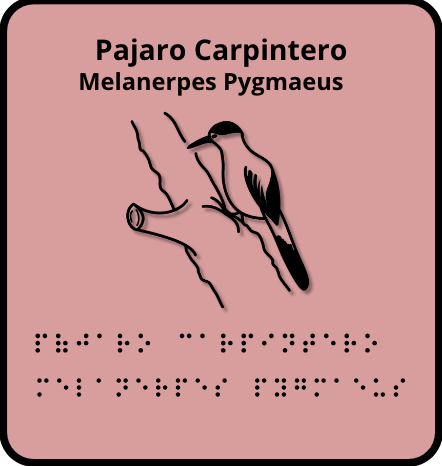
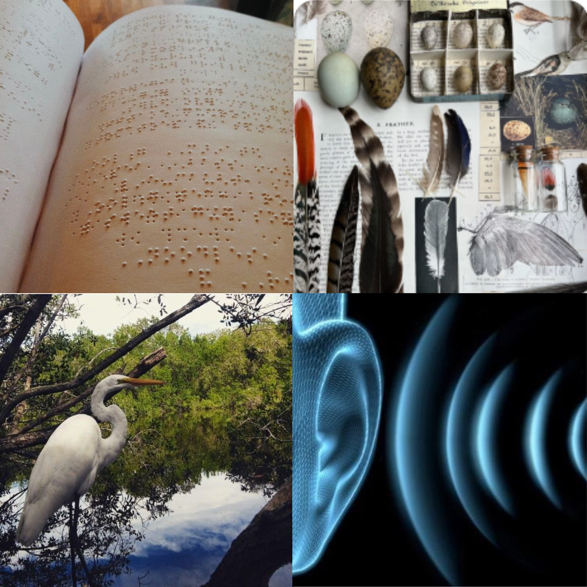

Este proyecto consiste en la elaboración de tarjetas educativas en código braille para enseñar la ornitología del estado de Campeche, incluyendo el nombre común y el nombre científico de cada especie para aquellas personas que tienen dificultades con la visión. A través de estas tarjetas, se busca que las personas ciegas puedan aprender de manera autónoma sobre las especies de su entorno.


El braille es un sistema de lectura y escritura táctil diseñado específicamente para personas ciegas o con discapacidad visual. Permite acceder a la información, la cultura y la educación mediante el tacto en igualdad de condiciones.
Los recursos auditivos son herramientas y materiales de comunicación que utilizan el sonido como medio principal para transmitir información, ideas o emociones. Se perciben exclusivamente a través del sentido del oído y emplean elementos como la palabra hablada, la música, el silencio y los efectos de sonido.
Campeche tiene una gran biodiversidad gracias a sus selvas, manglares y zonas costeras. Alberga alrededor de 358 especies de aves, entre ellas el tucán pico de canoa, el pavo ocelado y la garza rojiza. Por ello, es fundamental conservar estos ecosistemas y proteger las especies que forman parte de su patrimonio natural.
La ornitología es el estudio de las aves y analiza su comportamiento, alimentación, reproducción y migración. También explica su importancia en los ecosistemas, ya que ayudan al equilibrio ambiental mediante funciones como la dispersión de semillas y el control de insectos. Además, este estudio fomenta la conservación de la biodiversidad y la conciencia sobre el cuidado del medio ambiente.
Aquí aparecerán las 10 aves del proyecto con sus nombres, imágenes y acceso a los audios.
Aquí se colocará el audio correspondiente a esta ave.